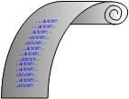
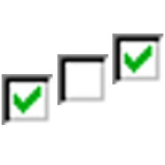
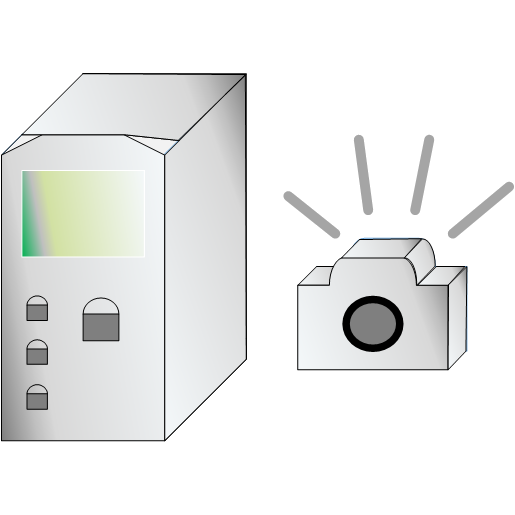

JavaScript required!
Report: Event-Log



Browse for available files (Archive):
Choose from available files on xCUBIO:
refresh
Header Info
Input Channels
Output Channels
Control Loop Setpoints
Events
This file can not be loaded!
The header of this file is corrupted
Choose exactly the three files from archives batch folder!